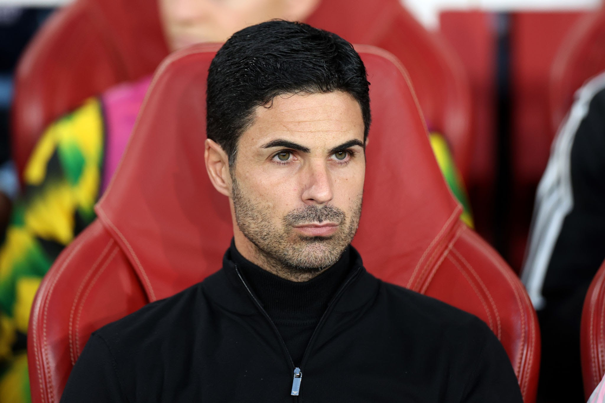

Mikel Arteta Amatriain (born 26 March 1982) is a Spanish professional football manager and former player. He is the manager of Premier League club Arsenal.
Arteta began his senior career at Barcelona in 1999 but limited playing time led to a loan to Paris Saint-Germain in 2001. He then signed for Rangers, winning the
Scottish Premier League and Scottish League Cup double in his debut season. After a brief return to hometown club Real Sociedad, Arteta joined Everton on loan

in 2005; he later signed permanently. He signed for Arsenal in 2011, where he won two FA Cups and served as captain from 2014 until his retirement in 2016.
Arteta represented Spain through several youth levels, but never played for the senior national team.[4] After retiring, he was appointed as an assistant coach
to Pep Guardiola at Manchester City. In 2019, he returned to Arsenal as head coach and won the FA Cup in his first year;[5][6] his title was changed to manager in
September 2020 to reflect his broader remit at the club.[7]